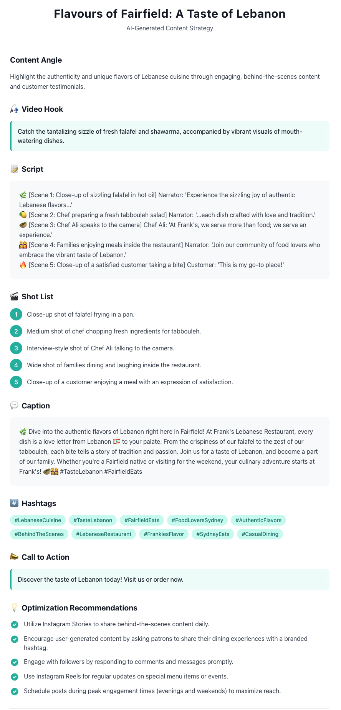

Product Vision
CreatorCopilot is an AI-powered content strategy agent that helps content creators and small businesses generate high-performing social media campaigns. This portfolio project demonstrates advanced AI agent architecture using OpenAI's function calling, integration with GPT-4o API, REST API orchestration, and modern cloud application design.
Key deliverables:
Core User Problem
Content creators and small businesses spend significant time on manual tasks:
- Brainstorming content ideas aligned with current trends
- Researching what's performing well in their niche
- Writing compelling scripts and hooks
- Creating captions and selecting relevant hashtags
- Planning video shoots and shot lists
CreatorCopilot reduces this manual effort by acting as an AI content strategist that autonomously researches trends, analyses business context, and generates complete campaign strategies.
MVP Scope
The MVP is a working web application where users input business details and receive AI-generated campaign strategies.
Design Mockup
Initial Page

Example Use Case

Input Fields:
- Business name and industry/category
- Location and target audience
- Social media platform (TikTok, Instagram, YouTube)
- Campaign objective (awareness, engagement, conversions)
- Brand tone (authentic, casual, professional, playful)
Example Input:
Location: Sydney
Platform: TikTok
Objective: Increase restaurant awareness
Audience: Sydney food lovers
Tone: Authentic, casual, engaging
AI-Generated Output:
- Campaign concept and content angle
- Attention-grabbing video hook
- 30-60 second script optimised for platform
- Detailed shot list for video production
- Engaging caption with storytelling elements
- Relevant hashtags based on trends and platform
- Clear call-to-action
- Content optimisation recommendations
Why OpenAI GPT-4o?
This project uses OpenAI's GPT-4o with function calling for several strategic reasons:
- Advanced Function Calling: GPT-4o's function calling capabilities enable autonomous decision-making, determining when and how to call external APIs
- Global Availability: OpenAI's API has broad regional support, making it accessible for developers worldwide including Australia
- Production-Ready: OpenAI's mature API and extensive documentation provide reliable patterns for building scalable AI agents
- Content Quality: GPT-4o demonstrates exceptional performance in creative content generation, storytelling, and marketing copy
- Cost Efficiency: Competitive pricing with flexible usage tiers suitable for both prototyping and production deployment
AI Agent Architecture
CreatorCopilot implements a true AI agent workflow—not a simple chatbot. The agent autonomously determines which actions to take and orchestrates multiple tools to complete the task using OpenAI's function calling.
Agent Workflow:

OpenAI Function Calling:
The agent uses OpenAI's function calling capability to intelligently decide when and how to use available tools. The agent architecture provides a structured framework for orchestrating multi-step workflows, enabling autonomous decision-making rather than rigid, predefined workflows.
Tool 1: Trend Research
Purpose: Retrieve trending topics, keywords, and content patterns related to the user's business and industry.
Implementation: Integration with SerpAPI (or similar search/trends API) to gather real-time trend data.
Example Flow:
↓
API Call: SerpAPI search query
↓
Output: Trending keywords, popular searches, related topics
↓
Agent Context: Uses trend data to inform content strategy
This tool ensures that generated campaigns are grounded in current trends and real search behaviour, not just generic templates.
Tool 2: Content Strategy Generator
The AI agent analyses multiple inputs to create a comprehensive content strategy:
- Business type and unique value proposition
- Target audience demographics and psychographics
- Platform-specific algorithm preferences and best practices
- Trending topics from research tool
- Campaign marketing objective
Structured JSON Response:
"campaign_name": "Behind the Scenes: Authentic Ramen",
"content_angle": "Show traditional ramen-making process",
"hook": "POV: You're about to discover why...",
"script": "30-60 second narrative script",
"shot_list": [
"Close-up: Chef hand-pulling noodles",
"Wide shot: Kitchen atmosphere",
"Close-up: Broth simmering"
],
"caption": "Engaging caption with storytelling",
"hashtags": ["#SydneyEats", "#RamenLovers"],
"cta": "Visit us at [location]",
"recommendations": [
"Post during peak engagement hours",
"Use trending audio"
]
}
Tech Stack
Frontend: React + Vite + Tailwind CSS
- Clean, modern UI with responsive design
- Loading states and error handling
- Three core pages: Landing, Generator, Results
- Form validation and user feedback
Backend: Python FastAPI
- RESTful API endpoints
- POST /generate-campaign — Main agent workflow
- GET /health — Health check endpoint
- Async processing for API calls
- Error handling and logging
AI Implementation: OpenAI GPT-4o
- OpenAI function calling for workflow orchestration
- Autonomous tool selection and execution
- System prompts optimised for content strategy
- 128K token context window for comprehensive analysis
- Structured outputs with JSON formatting
External APIs:
- OpenAI API for LLM inference (GPT-4o)
- SerpAPI for trend research and search data
AI Agent System Prompt
"You are an expert social media strategist specialising in
short-form content marketing. You understand audience psychology,
storytelling hooks, retention tactics, and platform algorithms."
Agent Reasoning Process:
1. Understand campaign objective
2. Research relevant trends (call trend tool)
3. Analyse business context and audience
4. Develop platform-optimised content strategy
5. Generate structured campaign deliverables
Development Approach
This MVP prioritises core functionality over unnecessary complexity:
Focus Areas:
- Working AI agent with real tool integration
- Clean, scalable architecture
- Excellent user experience
- Clear demonstration of technical capabilities
Not in Scope:
- User authentication (not required for demo)
- Payment processing (not relevant for MVP)
- Complex databases (in-memory state sufficient)
- Microservices architecture (unnecessary complexity)
Deployment Strategy
Frontend Deployment:
- Platform: Vercel
- Automatic deployments from Git
- Environment variables via Vercel dashboard
- Global CDN for optimal performance
Backend Deployment:
- Platform: Render or AWS (containerised)
- Environment variable configuration for API keys
- Health check endpoint monitoring
- Auto-scaling based on traffic
Required Environment Variables:
SERPAPI_KEY=your_serpapi_key
FRONTEND_URL=https://your-frontend.vercel.app
ENVIRONMENT=production
Next Steps & Extensions
While this MVP focuses on core functionality, there are future iterations that can be embedded into the agent:
Technical Extensions:
- Multi-platform campaign generation (TikTok, Instagram, YouTube simultaneously)
- Image generation integration (DALL-E for thumbnail concepts)
- Campaign performance prediction using ML models
- A/B testing recommendations based on historical data
Product Extensions:
- Campaign history and iteration capabilities
- Export to PDF or presentation format
- Analytics integration for performance tracking
Conclusion
CreatorCopilot demonstrates how AI agents can transform creative workflows by combining intelligent decision-making, external data integrations, and user-centric product design. By developing an AI-powered content strategist that assists with ideation, campaign planning, and content optimisation, this project showcases the potential of agentic AI to solve real-world business challenges.